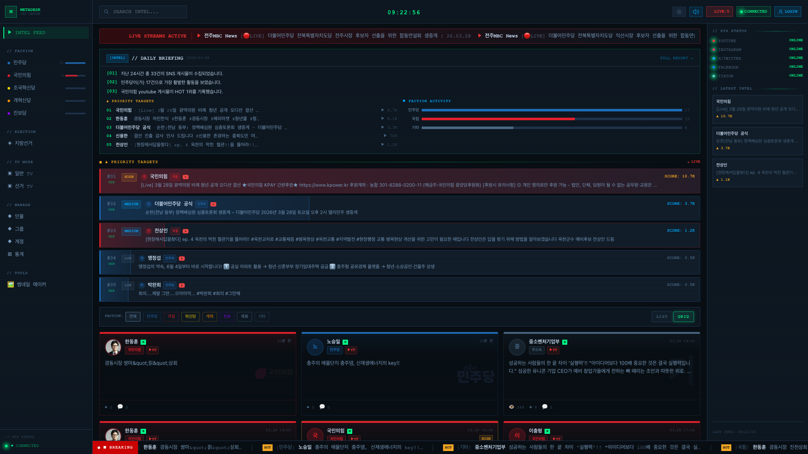
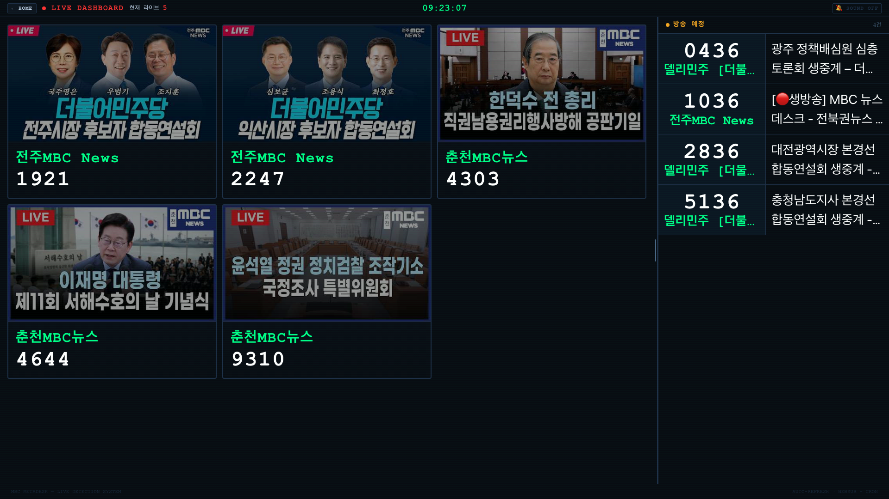
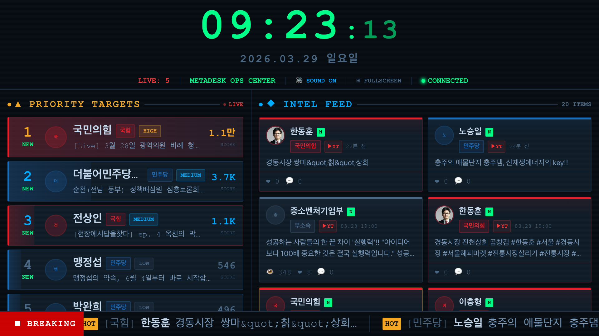
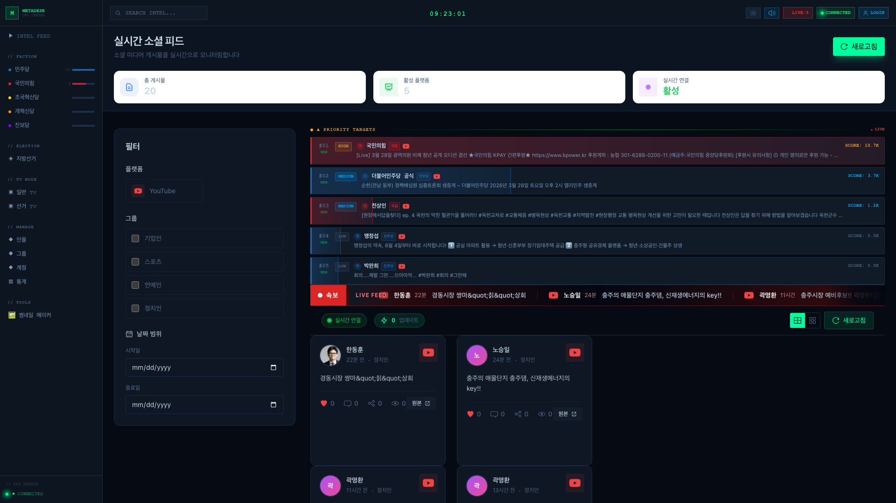
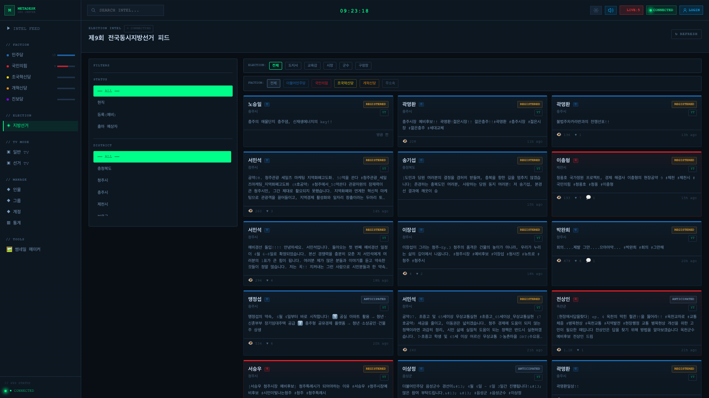
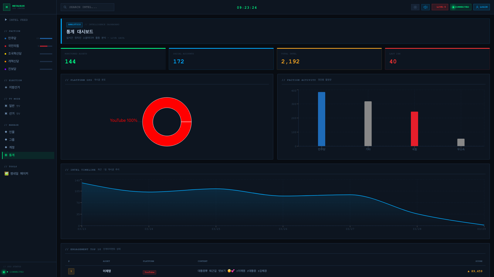
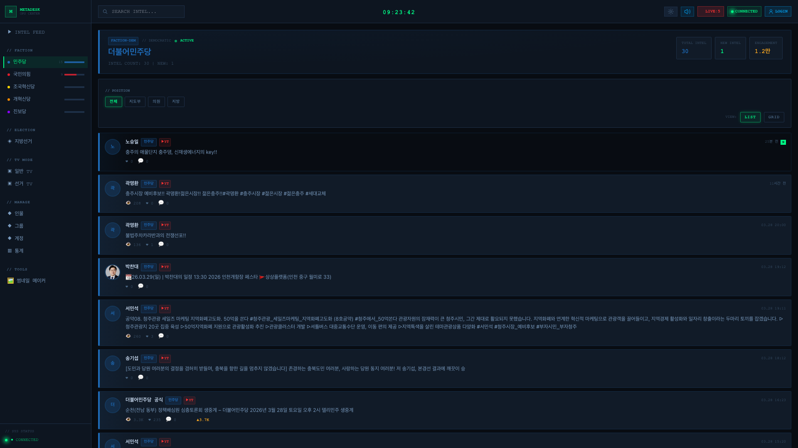
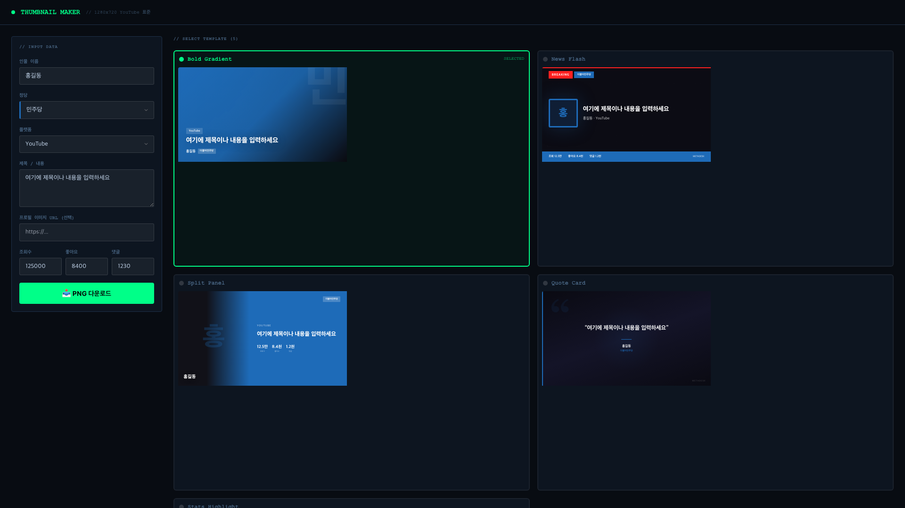
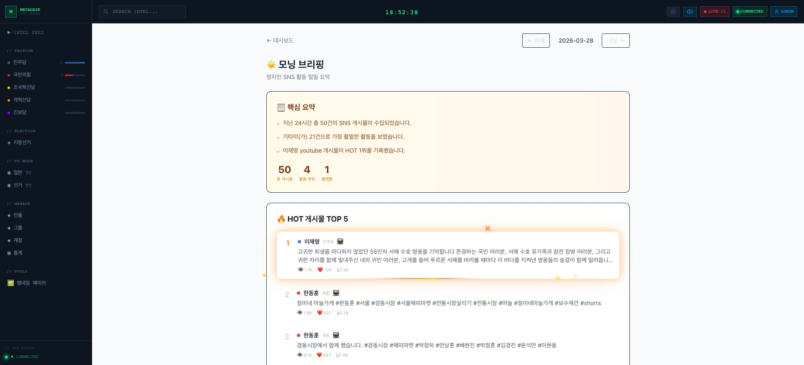

| 항목 | 주기 | 상태 |
|---|---|---|
| YouTube 신규 영상 수집 | 10분 | 운영중 |
| YouTube 라이브 감지 | 1분 | 운영중 |
| Twitter 타임라인 수집 | 5분 | 운영중 |
| HOT SCORE 계산 | 30분 | 운영중 |
| AI 감성분석 | 실시간 | 운영중 |
| 모닝 브리핑 생성 | 매일 07시 | 운영중 |
| YouTube 자동 알림 수신 | 즉시 | 운영중 |









| 항목 | 기존 방식 | 메타데스크 |
|---|---|---|
| 모니터링 | 5개 앱 수동 확인 | 대시보드 1개 |
| 라이브 감지 | 15~30분 (전화/카톡) | 1분 이내 (자동) |
| 여론 분석 | 기자의 감 | AI 감성분석 + SCORE |
| 아침 브리핑 | 인턴 30분 수동 | AI 자동 생성 |
| 속보 판단 | "느낌이 이상하다" | "SCORE 5,900 돌파" |
| 보도국 화면 | 별도 시스템 없음 | TV 모드 (URL 1개) |